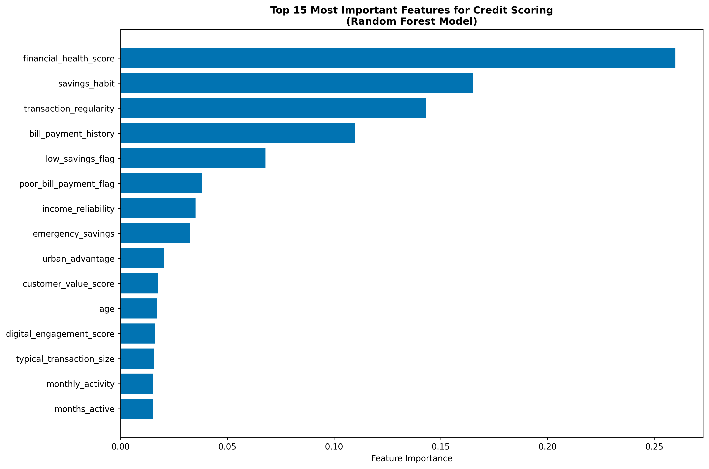
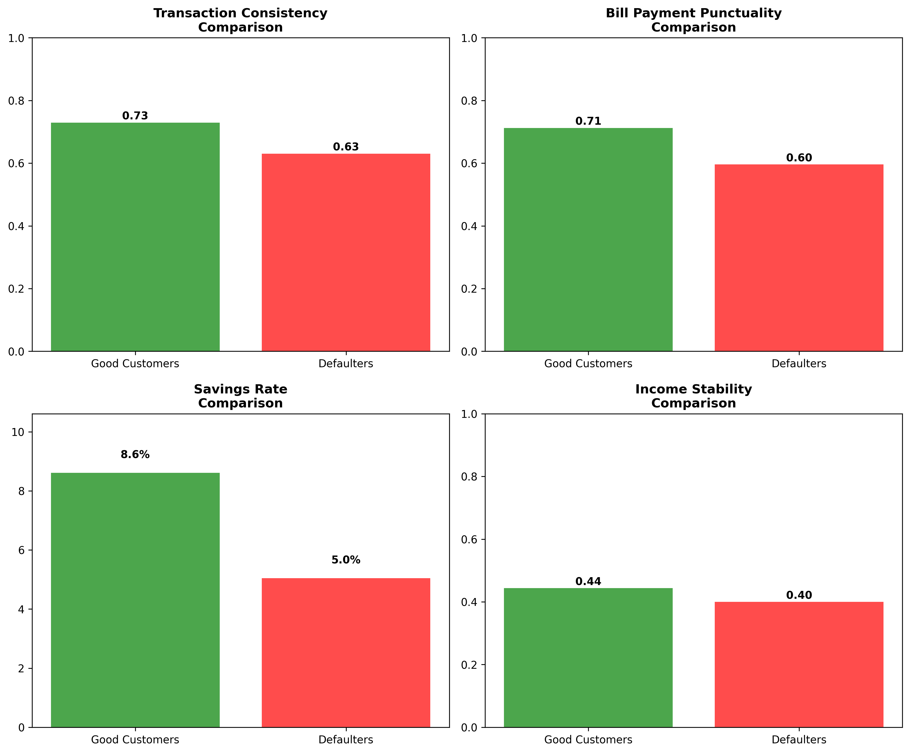
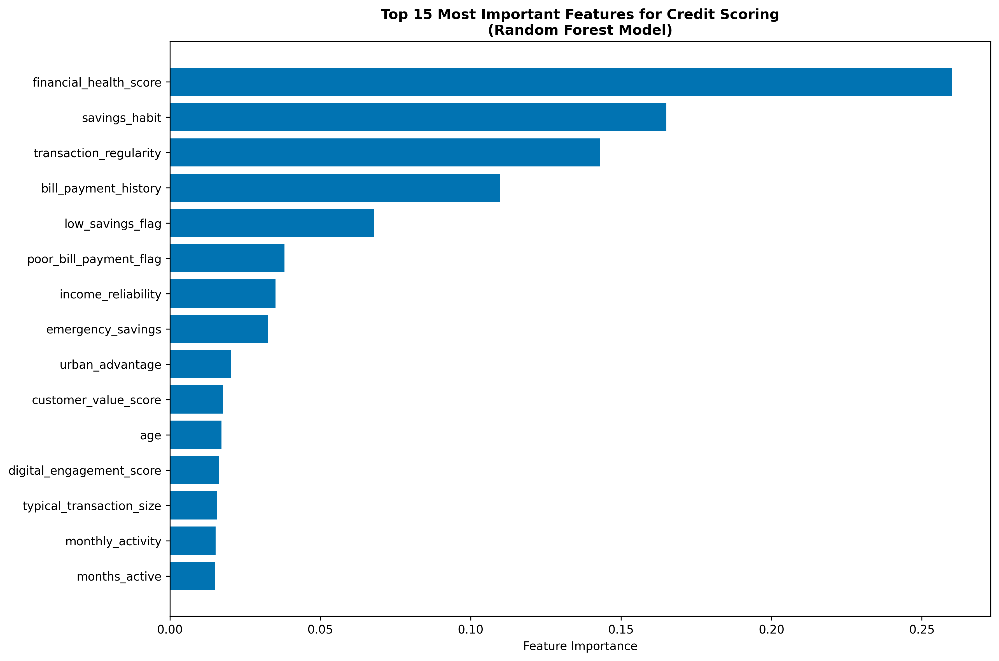
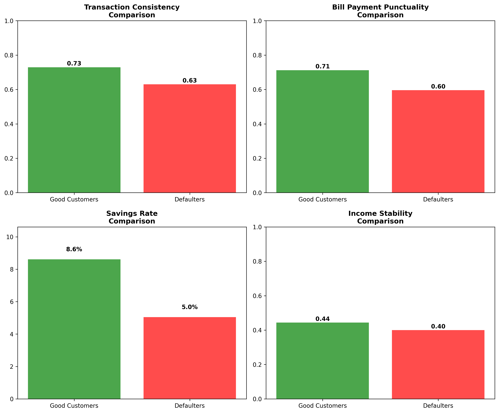

BookStore Insight
Role: Lead Analyst
This project provides an overview and key metrics insight in the form of a dashboard of a list of books available in a bookstore to help the manager make data-driven informed decisions.
Tools: Power BI

Daikibo Assembly Line Analysis
Role: Lead Analyst
Analyzed production and assembly line records to generate insights to help expedite repairs and plan operations for the company’s growth. Cleaned and analyzed the data using Microsoft Excel and Tableau for visualization and insights.
Tools: Excel and Tableau

Ghana FinTech Credit Scoring System
Role: Data Analyst
Developed an alternative credit scoring model using Python and machine learning to assess loan eligibility for Ghana's informal sector. Analyzed synthetic data that reflects real-world mobile money transaction patterns, bill payment history, and savings behavior to predict credit risk — enabling financial institutions to serve 42% more customers while maintaining a sustainable 5.8% default rate.
Tools: Python
 


